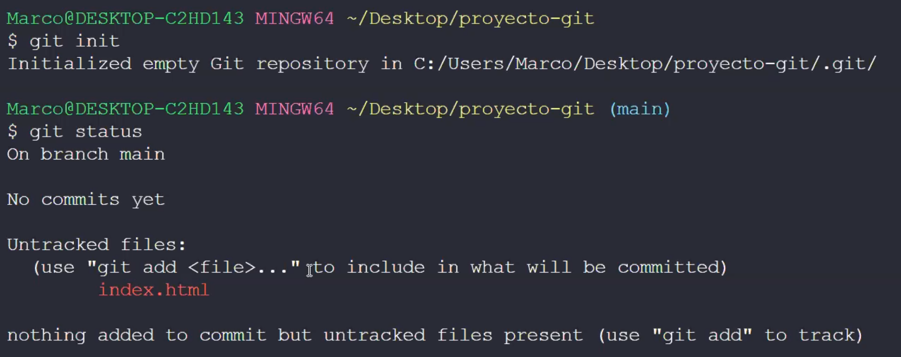
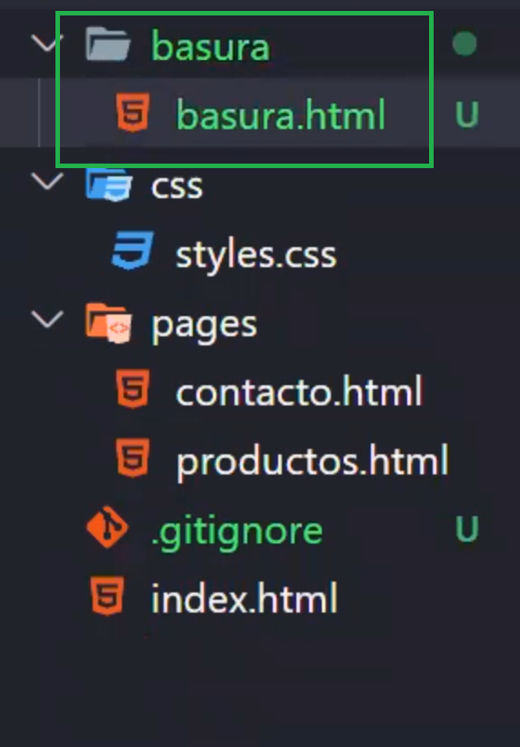

Es un sistema de control de versiones. Genera una linea de tiempo de un proyecto a partir de
una serie de puntos de guardado (Commits), a los cuales podriamos regresar "en el tiempo" si quisieramos. Nos
abre las puertas al trabajo colaborativo ya que podemos trabajar en ramas independientes dentro de un mismo
proyecto.
Una vez que git es instalado, podemos abrir una terminal dentro del Visual Studio Code:
Siempre verificar que la terminal tenga abierta la carpeta del trabajo ya que si estamos
en otra carpeta que tiene incluida la carpeta del proyecto y por algun motivo decidimos borrar archivos,
podriamos accidentalmente borrar algo que no queriamos.
Comandos
Lista:
.git config --global user.name "Nicolas Nunez"
(El --global aplica una configuración global y gracias a ello no
necesitamos volver a realizar este tipo de configuraciones la próxima vez que iniciemos un proyecto. No
olvidar las comillas) Si queremos corroborar el nombre de usuario tenemos que ingresar en la consola el comando git config user.name
.git config --global user.email "niconunez.2104@gmail.com" (No olvidar las
comillas) Si queremos corroborar el email tenemos que ingresar en la consola el comando git config user.email
.git init (Lo que va a hacer este comando es
inicializar git dentro de la carpeta. Esta inicialización se hace una única vez en este proyecto.
Convertimos de esta forma al proyecto en un repositorio que sera almacenado en la nube. Al mismo tiempo se
genera una carpeta "invisible" en nuestro proyecto, si borramos esa carpeta debemos volver a inicializar
git)
.git status (Me devuelve un estado del proyecto,
los commits realizados y si hay archivos "untracked" apareceran en rojo)

.git add nombre de archivo (Ejemplo del archivo: index.html) Suma un archivo a una etapa previa a hacer
un commit. Más adelante, explicaré una forma de agregar varios archivos en simultaneo para ahorrarnos el
trabajo de ir sumando uno por uno.
.git commit -m "escriba su mensaje" (Confirmaciones = commits, que siempre tienen que ir acompañadas de un
mensaje. El mensaje tiene que describir las modificaciones del proyecto. No te olvides de incluir las
comillas)
.git log (Me muestra el listado de
commits. Las seis primeras cifras de un commit son las que usamos para referenciarlo)
(HEAD ->
main) La afirmación HEAD (que podemos observar en la terminal de "git log") nos
aclara donde estamos parados. En este caso es la rama principal, es decir: "main"
.git log --oneline (Esta es una manera
mas simplificada para ver el historial de los commits, es de mucha utilidad tambien porque solo nos
muestra
los primeros digitos del ID)
.git checkout ID al que queremos ir (Con este comando podemos transportarnos a un commit anterior. Para hacer
esto
copiamos y pegamos las primeras 6 cifras del commit, ej: git checkout f52097f. Tambien usamos este comando
para movernos entre "ramas". Para hacerlo debemos copiar y pegar el nombre de la rama, ej: git checkout
rama-secundaria. Si tipeamos git checkout main volveremos a la rama principal, y al ultimo commit
realizado,
osea "al presente"). Podriamos usar tambien el comando git checkout para ir a un commit viejo (tené en cuenta que varias secciones van a volver al estado en el que estaban en ese commit) y podria crear una rama secundaria. Desde ahi podrias hacerle modificaciones a una sección, volver a la rama MAIN y hacer un merge. Se recomienda hacer una rama secundaria en caso de que haya algo que no queramos añadir y no se pierdan datos sobreescribiendo los commits que vienen despues de esa rama
.git branch nombre de
rama-secundaria (Con este comando podemos crear ramas
secundarias,
lineas separadas donde podemos trabajar sin interferir con el trabajo de otra persona. Una vez el trabajo
esté terminado, las ramas pueden volver a unirse o "mergearse")
.git branch (Con este comando podemos
ver las ramas que han sido creadas)
.git merge nombre de rama-secundaria (Con este comando "mergeamos" las ramas secundarias con la principal. Esto
permite unir el trabajo de varias personas en un solo proyecto. TENER CUIDADO y fijarse de siempre estar
en
la rama Main cuando quiera unir las ramas secundarias)
.git reset --hard ID de un commit
anterior (Se podria decir que es el reset mas riesgoso. Borra
todo lo que viene despues del commit al que "regresamos en el tiempo". Borra toda la información de los
commits y todo lo que tenia en la staging area. Ya no habrá forma de "volver al futuro")
.git reset --soft ID de un commit
anterior (El soft reset no borra la informacion, lo unico que borra son los commits (borra el historial). Un ejemplo para saber cuando lo podemos utilizar podria ser si quisieramos limpiar, acomodar o emprolijar el historial de commits del proyecto. Cuando lo ejecutamos en la consola, todo lo agregado despues del commit al que nos dirigimos se mantiene. Otro dato interesante es el hecho de que "eso" que fue agregado despues del commit al que nos dirigimos se guarda en el staging area)
.git rm --cached nombre de un archivo (Ej: git rm --cached pages/productos.html) (Con este comando podemos indicarle a git que deje de hacerle el seguimiento a un archivo)
.git remote add origin (se suele dejar por defecto el nombre "origin")+ URL del sitio (La URL la podemos tomar desde la seccion de nuestro repositorio en Github) (Con todo este comando podemos crear el repositorio remoto)
.git remote -v (Con este comando podemos verificar si el repositorio se creó correctamente)
.git branch -M nombre de rama principal o secundaria (Con este comando podemos cambiar el nombre de la rama principal. Este comando es mas que nada para cambiar el nombre Master a Main. Tambien podemos con el mismo comando cambiar le nombre de las ramas secundarias por si nos confundimos al tipearlas)
.git config --global init.defaultBranch main (Con este comando haremos que la rama principal tenga el nombre "main" cada vez que se inicialize un repositorio local en nuestra pc)
.git push -u origin main (La primera vez que enviamos información tenemos que utilizar este comando ya que debemos configurar un repositorio remoto a una rama). De esta manera le estamos asignando siempre a la rama main que cada vez que utilizemos el comando git push siempre envie la información al origin. Cuando le de enter, toda la informacion que se tiene en el repositorio local se manda al remoto. Aparecera una ventana emergente donde deberemos de iniciar sesión con nuestra cuenta de github. De esta manera ya queda abierta la sesión de github dentro de nuestro PC y ya no habra que iniciar sesión nuevamente. Este comando tambien se utiliza para las ramas secundarias de un proyecto. Si nunca enviamos informacion desde una rama secundaria al repositorio remoto debemos configurar ese repositorio a la rama secundaria. Se siguen los mismos pasos mencionados anteriormente solo que en vez de "git push -u origin main" tendremos que tipear en la consola 'git push -u origin "nombre de rama secundaria"'
.git push (Para cargar los archivos del repositorio local al repositorio remoto utilizaremos este comando. Es el que se utiliza para enviar información. Si queremos enviar informacion de ramas secundarias debemos configurarlo de manera manual. En el repositorio remoto se van cargando cada una de las ramas por separado. El git push podes ejecutarlo al final de la jornada, no es necesario que constantemente estes pusheando tus modificaciones al repositorio remoto)
.git clone (Es la herramienta que nos permite que otra persona pueda trabajar en nuestro proyecto de manera remota ya que puede clonarlo en su computadora. Lo primero que hay que hacer es, desde la computadora donde queremos clonar el proyecto, generar una carpeta. Adentro de esa carpeta presionamos el click derecho y seleccionamos la opcion "gitbash here". De esta forma aparecera la terminal de git. Luego tipeamos el comando "git clone" + el enlace del repositorio. Luego apretamos enter y listo. Tenemos el proyecto desde otra computadora)
¿Como copiamos el enlace del repositorio?
.git pull (Funciona de una manera similar al comando "git merge", asi que tené en cuenta que se pueden generar conflictos. Con el comando "git pull" podemos traer todas las modificaciones, archivos añadidos, informacion, etc. del repositorio remoto ya que, en un trabajo que es colaborativo, constantemente se le estan haciendo modificaciones al proyecto. Si mi trabajo está actualizado con esas modificaciones, no podre ejecutar el comando "git pull". Se recomienda que siempre que se empieze con la jornada laboral, el primer comando que se ejecute en la consola de git sea "git pull" por lo mencionado recién. Una vez que se hayan corregido los posibles conflictos, podre hacer mi git add ., git commit -m"...", y mi git push, ya que puede haber información que no tuvo conflictos pero que esta solo en mi repositorio local asi que debe ser pusheada al remoto")
.git ignore (Cuando ejecutamos el comando "git add ." estamos enviando TODOS los archivos a la staging area. Hay veces que queremos ignorar ciertos archivos o carpetas, como puede ser cuando estemos trabajando con react y npm con su biblioteca de javascript ya que son carpetas que pesan mucho y contiene archivos que son descartables. Es por esto que no es necesario estar pusheandolas al repositorio remoto)
Nosotros podemos crear un archivo en el proyecto que se llame .gitignore (No te olvides del punto que va al principio)
En este ejemplo crearemos una carpeta que se llama basura para usarla de demostración

Con tan solo abrir el archivo .gitignore y tipear el nombre de la carpeta dentro ya podemos ignorar la carpeta "basura" en los proximos "git push". Si queremos ignorar a un archivo en especifico debemos especificarla terminacion. Ejemplo: basura.css. Acordarse que cada archivo o carpeta que se ignora debe ir en una linea diferente.
Entonces:
El comando "git status" nos muestra el estado actual del repositorio. Nos permite
verificar que archivos aun no fueron puestos para el commit. Tambien nos dice si hubo archivos que tuvieron
modificaciones en base al ultimo commit que se realizó.
Sumamos al "git add" el archivo que fue modificado, en el caso del ejemplo de
arriba seria el "index.html".
Ahora chequeamos con Git Status el estado del repositorio y confirmamos si ha
sido guardada la modificacion
Cuando con el comando "git add" vinculamos un archivo, este se sumara a una "sala
de espera" donde los archivos aguardan para ser confirmados en el repositorio de git
Posteriormente, con el comando git commit, ese archivo o si son mas de uno, esos
archivos, seran confirmados en el repositorio de GIT
Cuando todos los archivos son guardados en el repositorio de GIT, estos volveran
a su estado inicial en el Working Directory (Nuestra PC)
Este mapa conceptual que fue planteado arriba es una representación de lo que se
hace dia a dia en un proyecto colaborativo ⇧
En caso de que queramos añadir a la "staging area" mas de un archivo, no es
necesario añadirlos uno por uno. En ese caso lo que hay que hacer es:
En definitiva, el comando "git add ." es el que mas
usaremos debido a su practicidad.
Observación: Hay veces que no
podemos escribir cuando estamos en la terminal viendo el listado de commits. En estos casos debemos usar las
flechas del teclado y presionar la letra Q sobre la opcion END que aparece al final de la terminal. De esta
forma podremos volver a escribir en la terminal
A continuación hay un diagrama hecho en clase que representa el funcionamiento de
las ramas secundarias...
Conflictos:
Habrá veces en el trabajo colaborativo donde mas de una persona edita una misma
seccion dentro de un mismo proyecto. Cuando se intenten fusionar las ramas que ambos estan trabajando por
separado, surgirá un "conflicto". Tengamos en cuenta que hasta que no exista el merge, los cambios o
ediciones de una rama no se veran reflejados en la otra.
Considerando que ambas ramas ejecutaron en paralelo los comandos "git add ." y
'git
commit -m "Mensaje"', cuando ocurra el merge (siempre desde la rama main) sucedera esto:
Siempre leamos lo que la consola nos recomienda cuando algo sucede luego de
ejecutar
un comando. En este caso debo resolver el conflicto y una vez que el conflicto este resuelto voy a comitear
el
resultado para finalizar esa fusión de las ramas
Cuando sucede un conflicto, git escribe LITERALMENTE sobre el html. Sepamos
tambien
que Visual Studio Code tiene una integración con git. Gracias a esto, cuando aparece un conflicto, este es
señalado con colores y botones con el fin de solucionarlo
En el caso particular que tenemos en la imagen de arriba ⇧, vamos a elegir la
opción
"Aceptar cambio actual". Haciendo esto, los cambios que venian de ramas secundarias, se borran. Luego,
procederemos a ejecutar en la consola (sobre la rama main) "git add ." y 'git commit -m "Mensaje"'. Con esto
ya realizado, se termina el proceso de merge entre las dos ramas habiendo resuelto el conflicto. ¡Ojo!
Aveces
el conflicto puede aparecer en mas de un archivo. En ese caso, se repite el proceso para cada uno de ellos.
Una vez que el proyecto ya esta alojado en el repositorio remoto y ya se encuentran colaboradores trabajando en el, pueden surgir problemas cuando dichos colaboradore hacen modificaciones y lo pushean al repositorio remoto. ¿Por que? Porque si yo luego modifico mi proyecto y tambien le hago el git push puede aparecer este aviso en la consola
Si mi repositorio local no está actualizado con la información que está en el remoto, yo no podre ejecturar el comando "git push" ¿Como lo actualizo? con el comando git pull
Reseteos
Ya hemos hablado un poco sobre los reseteos en este sitio en la sección de comandos. Hay tres tipos de reseteos, pero por el momento veremos dos de ellos. Por un lado
tenemos el "Hard reset" y el "Soft reset ¿Que hacemos con estos reseteos? Lo que hacemos es "volver en el tiempo" a un commit anterior del comit donde nos encontramos y borrar en mayor o menor medida los commits, informacion y/o datos almacenados en el staging area.
Podriamos usar el comando soft reset, por ejemplo, si nos hubiesemos olvidado de agregarle informacion a una seccion de la página en un commit que hice antes. Viajamos en el tiempo atras con el soft reset y luego le agregamos lo que faltaba. Tené en cuenta que el commit donde vas a guardar esa edicion sobreescribirá todo lo que venia despues del commit al cual viajaste desde el "futuro"
Repositorio en Github
Que hacemos cuando creamos un repositorio en Github? Primero, a nuestro repositorio local le tenemos que asignar un repositorio remoto para luego enviarle los archivos de nuestro proyecto. En la pagina de Github nos aparecen dos opciones de comando cuando creamos un repositorio
La opcion de arriba ⇧ es por si estamos arrancando con un proyecto nuevo, mientras que la de abajo ⇩ es para uno ya empezado.
Entonces para la primera vez, luego de git init, git add y git commit los pasos serian:
git remote add origin + URL del repositorio
Verificar que el nombre de la rama principal sea "main" y no "master"
git push -u origin main
Github pages
Esta opción de github nos permite visualizar un proyecto como si ya estuviese cargado en un servidor. De esta forma lo podremos ver desde el navegador, tanto en una computadora de escritorio, como en un celular o una televisión.
Pasos para activar Github pages:
1er Paso
2do Paso
3er Paso
Tener en cuenta que hay que esperar un poco para que carguen los archivos
4to Paso
5to Paso
¡Listo! Ya podes visualizar tu pagina en un navegador
Como agregar colaboradores
Las personas que sean aceptadas como colaboradores podran crear ramas secundarias y tambien ejecutar el comando git push con información nueva para el sitio
Archivo README
Que hacemos con el archivo README? En nuestro repositorio remoto nos aparecerá esta opción
Aqui es donde añadiremos el archivo readme, pero primero deberemos crearlo
Crearemos el archivo readme en nuesto proyecto
En la esquina superior derecha del visual studio code tenemos esta opcion, hagamosle click
Nos aparecera una ventana a un costado donde nosotros podemos editar el archivo readme
En el sitio web "Editor.md" podemos ver como podemos editar con simbolos y distintos estilos nuestro archivo readme
¿Para que nos sirve el archivo readme en nuestro proyecto? Podemos crearlos para contar de que se trata nuestro proyecto, en que contexto se hizo, que herramientas se utilizaron, cual es el objetivo del proyecto. Basicamente es la documentación de ese repositorio
Entonces, habiendo aprendido todo... ¿Como es el flujo de trabajo ahora?
Supongamos que ya arrancamos con un proyecto y le agregamos contenido a las secciones. Procedemos con el comando "git add .", luego con 'git commit -m"Un mensaje"' Y AHORA le sumaremos el comando "git push" para efectivamente mandar lo que agregamos al repositorio remoto
Cuando un proyecto ya este alojado en github, cada vez que ejecutemos el comando git push desde la consola del repositorio local, los cambios se actualizaran en el repositorio remoto.
Este es el momento para chequear que todas las vinculaciones o rutas a las secciones de nuestro sitio esten bien escritas, las imagenes o los hypertextos no tengan mayusculas, tildes, espacios, etc. Acordarse que todo es casesensitive. Es muy común que aveces nos aparezca "error 404" cuando queramos cargar una seccion del sitio, o que una imagen tenga el vinculo roto. Es aqui donde debemos revisar que todo este bien escrito y vinculado
Git flow:
Cuando estemos en un contexto empresarial. Nosotros no podemos directamente pushear y mergear nuestra rama secundaria a la rama main. Antes el push debe ser verificado por el lider del proyecto, y para eso necesitamos solicitar en github un push request. En el siguiente video podemos observar como se genera dicho push request